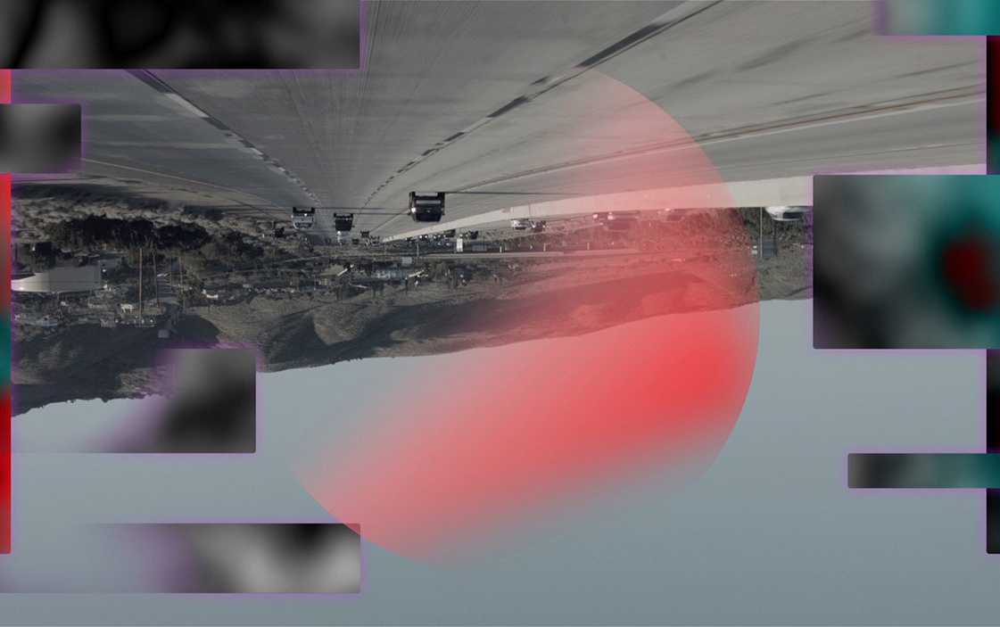

THE RISING
ANTI-UTOPIA
In a dystopia, the canonical example is that of 1984. There is total surveillance. Information is gathered about everyone, and this information is used to decide who you are or how to behave. We seem detached from managing our personae in the public world, and managing how we define ourselves. The rhetoric of “Big Brother technologies” is easily—and frequently—ridiculed as “sinister conspiracies”, but the paradoxical result is that genuinely worrisome developments can seem “not so bad” simply for lacking the overt horrors of Orwell’s dystopia. Of course the perceived meaning may depend on the onlooker’s expectations, but now the cycle seems to expand—from utopias and dystopias, to the rise of anti-utopian dreams.
[A] Goldberg, Adele & Kay, Alan. (1977). Personal Dynamic Media.
[B] Agre, Philip. (1994). Surveillance and Capture: Two Models of Privacy.
Sinister
conspiracies The organization of personal information (...) is objectionable because of the way we exist as social beings—managing our personae in the public world by deciding what to disclose, and to whom. Cookies don’t simply threaten the security of our credit card data, they also compromise our ability to manage how we present and define ourselves.
All the surveillance model offers is a metaphor of bureaucratically organized state terror. (...) The rhetoric of “Big Brother technologies” is easily—and frequently—ridiculed through paraphrase in terms of “sinister conspiracies”. The paradoxical result is that genuinely worrisome developments can seem “not so bad” simply for lacking the overt horrors of Orwell’s dystopia.
[B]

Stills from the film The Sprawl: Propaganda
About Propaganda (2016), by Metahaven